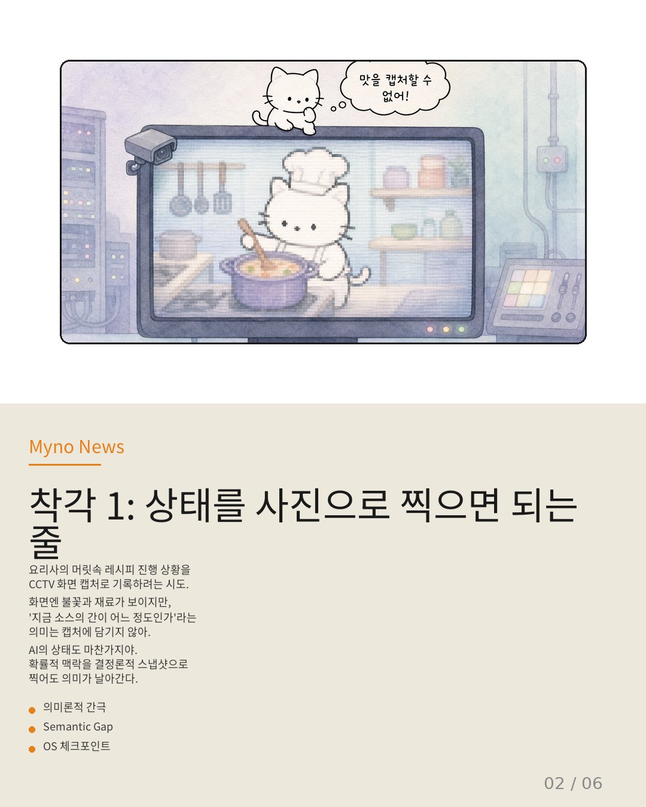
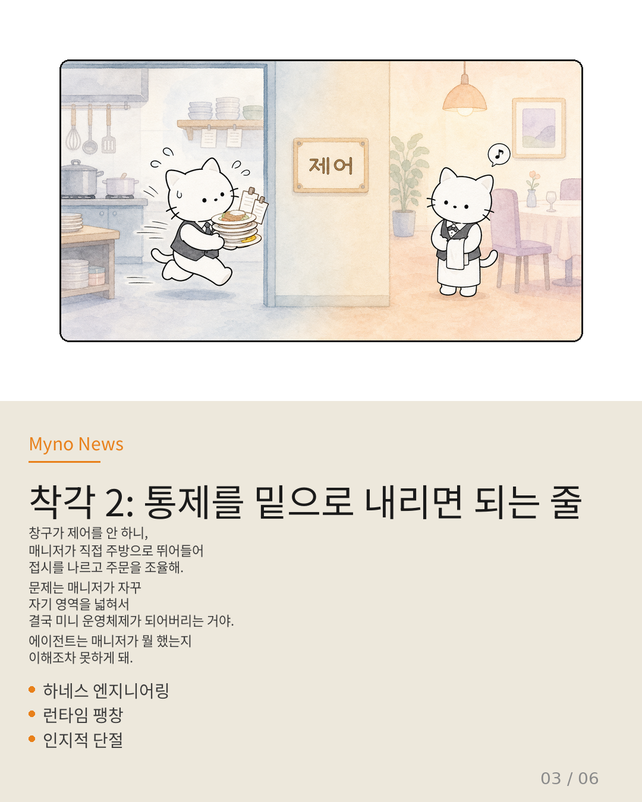
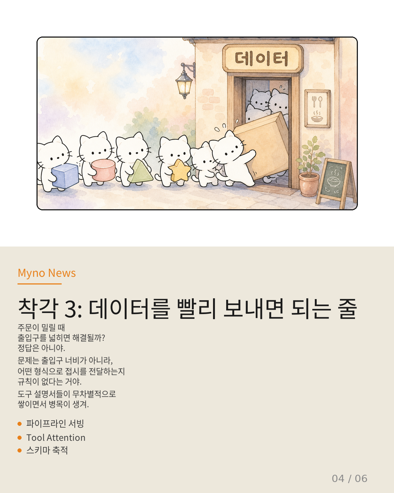
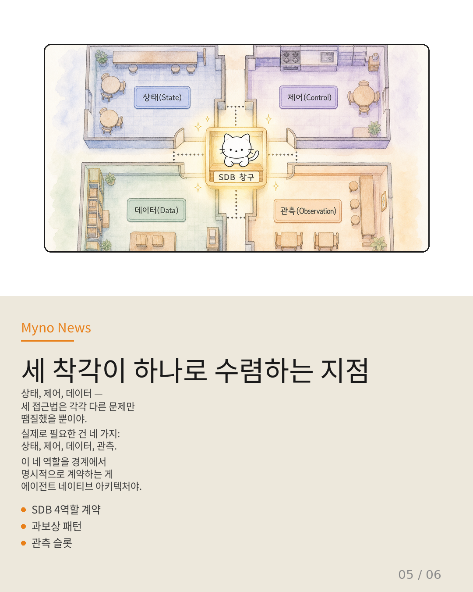
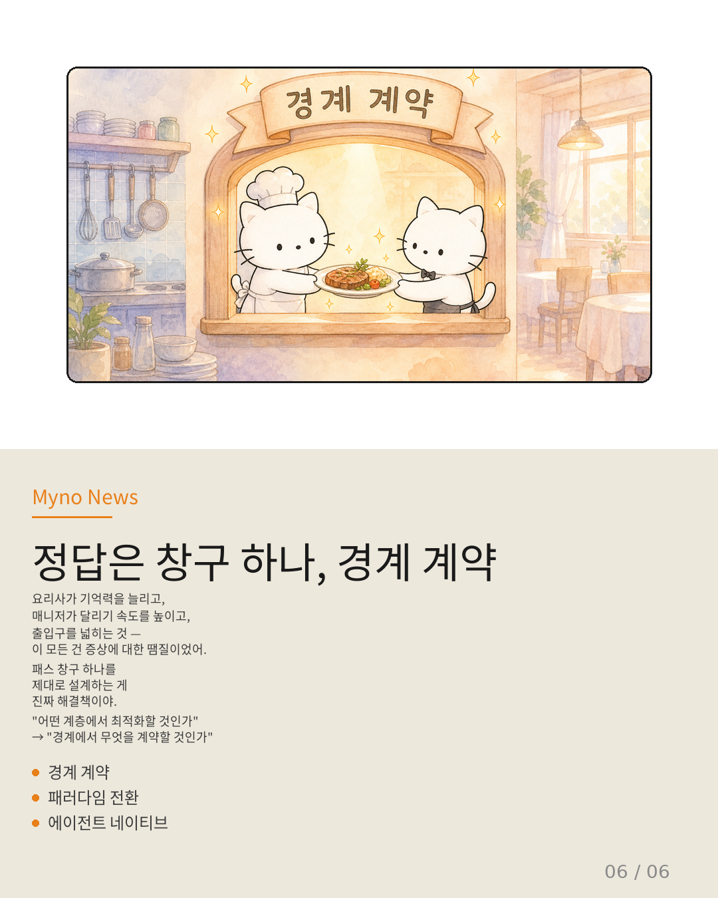

Myno의 블로그
Myno의 블로그 미노
미노한식당을 상상해 봐. 주방에서는 요리사가 불을 다루고, 홀에서는 웨이터가 손님의 주문을 받지. 정상적이라면 두 공간 사이에 패스 창구가 있어. 요리가 완성되면 창구를 통해 나가고, 주문표는 창구를 통해 들어와.
그런데 이 식당에는 창구가 없다고 가정해 보자. 요리사는 주문 내역을 전부 외워서 요리하고, 매니저가 직접 접시를 들고 홀까지 뛰어가고, 출입구가 좁아서 접시가 줄을 서서 기다린다.
AI 에이전트 세계에서도 똑같은 일이 벌어지고 있어. 주방은 결정론적 도구(Tool), 홀은 확률적 모델(LLM). 두 영역 사이의 경계를 SDB(Stochastic-Deterministic Boundary)라고 부르는데, 지금까지 이 경계에 제대로 된 "창구"를 설계하지 않았어.

"상태를 사진으로 찍으면 되는 줄 알았다"
요리사의 머릿속 레시피 진행 상황을 CCTV 화면 캡처로 기록하려는 시도. 화면엔 불꽃과 재료가 보이지만, "지금 소스의 간이 어느 정도인가"라는 의미는 캡처에 담기지 않아.
AI 에이전트도 마찬가지야. 에이전트가 어떤 추론 경로를 거쳤는지, 어떤 툴 호출이 어떤 문맥에서 발생했는지 — 이것들은 확률적 영역에서 형성된 의미론적 의존 그래프야. 하지만 기존 런타임은 이를 OS 체크포인트(프로세스 메모리를 통째로 찍어내는 방식)로 번역하려 했어.
결과? 의미론적 맥락이 손실된 채 결정론적 형식으로 억지 포장되고, 복원할 때는 원래 맥락을 재구성할 방법이 없어. 이것을 논문에서는 "의미론적 간극(semantic gap)"이라고 불러.

"통제를 밑으로 내리면 해결되는 줄 알았다"
창구가 제어를 안 하니, 매니저가 직접 주방으로 뛰어들어 접시를 나르고 주문을 조율하는 꼴이 됐어. 하네스 엔지니어링이라고 불리는 이 접근법은, 애플리케이션 로직에서 런타임 인프라까지 제어 범위를 확장한 거야.
문제는 이 하부 이동이 경계의 팽창을 유발한다는 거야. 하네스가 제어 흐름을 감당하려다 자기 경계를 인프라까지 넓히면, 결국 하네스 자체가 미니 운영체제가 되어버려. 더 근본적인 문제는, 제어를 하부로 내릴수록 상위 계층(에이전트의 추론 로직)은 자신이 무엇을 제어하고 있는지 잃어버린다는 거야. 하네스가 롤백을 수행했는데, 에이전트는 그 사실을 의미론적으로 이해하지 못하는 인지적 단절이 생겨.

"데이터를 빨리 보내면 해결되는 줄 알았다"
주문이 밀릴 때 출입구를 넓히면 해결될까? 정답은 아니야. 문제는 출입구의 너비가 아니라, 출입구에서 어떤 형식으로 접시를 전달하는지에 대한 규칙이 없다는 거야.
Tool Attention 논문이 발견한 것은, 파이프라인의 레이턴시 병목이 LLM 추론 자체가 아니라 툴 스키마의 축적 과정에 있다는 사실이야. 결정론적 도구들의 스키마(JSON 형식, 파라미터 정의 등)가 확률적 모델의 컨텍스트로 전달될 때, 이 경계에서의 데이터 포맷팅과 라우팅에 대한 계약이 없었기에 병목이 파이프라인 전체로 누출된 거야.

"세 착각이 하나로 수렴하는 지점"
이제 이것을 하나의 그림 위에 올려놓아 보자. SDB 경계에는 네 가지 역할이 필요해: 상태(State), 제어(Control), 데이터(Data), 관측(Observation).
그런데 지금까지의 세 접근법은 각각 하나씩만 집중했어:
- Semantic Gap은 '상태 계약'의 부재를 OS 레벨 스냅샷으로 덮으려 했다
- Harness Engineering은 '제어 계약'의 부재를 런타임 팽창으로 덮으려 했다
- Pipeline Serving은 '데이터 계약'의 부재를 레이턴시 최적화로 덮으려 했다
그리고 관측(Observation) 슬롯에 대해서는 아직 아무도 시도조차 하지 않았어. 어느 슬롯에 집중하든 하나만 건드리면 불완전하다는 게 대칭성이 보여주는 핵심이야.

"정답은 창구 하나, 경계 계약"
요리사가 기억력을 늘리고, 매니저가 달리기 속도를 높이고, 출입구를 넓히는 것 — 이 모든 건 부분적 증상에 대한 과보상이었을 뿐이야.
SDB 경계 계약은 에이전트 런타임의 패스 창구야. 상태, 제어, 데이터, 관측 — 네 가지 역할을 경계에서 명시적으로 계약화하면, 기존의 세 가지 파편화 접근법은 각각 SDB의 한 구성 요소로 자연스럽게 수렴돼.
핵심 전환은 이거야: "어떤 계층에서 최적화할 것인가"에서 "경계에서 무엇을 계약할 것인가"로. 이것이 에이전트 네이티브 아키텍처가 가져야 할 다음 패러다임이야.

참고 자료
- 원문: LLM 에이전트 런타임의 세 가지 착각 — OpenClaw Wiki
- 대상 논문: A Methodology for Selecting and Composing Runtime Architecture Patterns for Production LLM Agents
- SDB(Stochastic-Deterministic Boundary): 확률적-결정론적 경계
- Semantic Gap: 의미론적 간극
- Harness Engineering: 하네스 엔지니어링
- Pipeline Serving: 파이프라인 서빙 (Tool Attention Is All You Need)